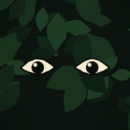
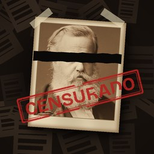
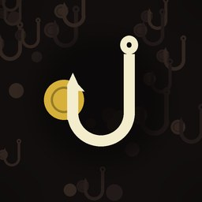

Sobre o Mata Densa
Quem somos e como cada vídeo é feito.
Quem somos
O Mata Densa é um estúdio independente brasileiro, tocado por uma pessoa: Lucas Ludicsa, que escreve, pesquisa, narra e publica os vídeos. Começou em setembro de 2026 com o canal de natureza e hoje tem três canais.

Mata Densa
Bichos, plantas e fungos do Brasil: onde vivem, como se escondem e o que fazer quando você cruza com um.

Passado Censurado
A parte da história do Brasil que o livro da escola pula: inventores esquecidos, cidades abandonadas, decisões que ninguém conta.
YouTube @passadocensurado · TikTok @passadocensurado · ver vídeos

Golpes e Dinheiro
Os maiores golpes da história, contados passo a passo, para você reconhecer o truque quando ele aparecer de novo.
Como um vídeo é feito
- Pesquisa. Cada tema começa com fontes: artigos científicos, livros, acervos públicos e enciclopédias. Os links vão na descrição de todo vídeo.
- Roteiro. Texto curto, direto, sem exagerar o que a fonte diz. Número, data e nome são conferidos antes da gravação.
- Imagens. Fotos e pinturas de acervo (Wikimedia Commons, Library of Congress, Biblioteca Nacional, Gallica) em domínio público ou licença livre. Quando a licença pede, o autor é creditado na descrição.
- Narração. A voz é a do próprio criador, gerada por síntese a partir de gravações dele. Quando um vídeo tem conteúdo sintético, isso é informado na plataforma.
- Publicação. Os vídeos saem pelo YouTube e pelo TikTok, com a ajuda do nosso app matadensa publisher.
Correções
Errou? Queremos saber. Escreva para lucas.soldeira.ludicsa@gmail.com com o link do vídeo e a fonte; a correção vai no comentário fixado e, se for grave, o vídeo sai do ar.
Contato
Parcerias, imprensa, pedidos de crédito ou remoção de imagem: lucas.soldeira.ludicsa@gmail.com.